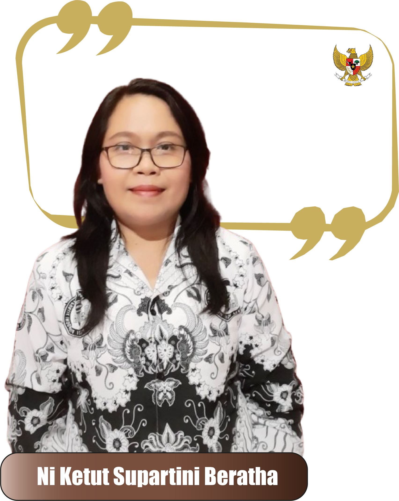

Pendidikan & Karier
Lahir di Bungaya, 24 Maret 1973.
Ni Ketut Supartini Beratha, Terlahir dari keluarga Hindu Bali, bapak
seorang anggota kepolisian yang berdedikasi dalam menjaga keamanan,
sementara ibu adalah seorang pengusaha yang gigih membangun usaha dari
nol. Sejak kecil, Dia tumbuh dalam lingkungan yang menjunjung tinggi
disiplin, tanggung jawab, dan kerja keras.
Riwayat
Baca Selengkapnya
Latar belakang pendidikan
Beliau menempuh Pendidikan jenjang SD, SMP
di Karangasem dan PT (Perguruan Tinggi) di Denpasar. Menyelesaikan
Pendidikan Bahasa dan Sastra Inggris tahun 1995, namun sempat
mengikuti Program Pendidikan Pasca Sarjana Linguistik
(translation) karena satu dan lain hal tidak dilanjutkan. Beliau
adalah orang yang gemar membaca, menari, dan beliau sangan suka
pada music. Beliau kerap kali menghabiskan Waktu luang Bersama
keluarga.
Pengalaman hidup
Beliau pernah terlibat dalam kegiatan
social atau kemanusiaan saat masih muda, namun sekarang sudah tida
lagi. Pekerjaan tetap beliau sekarang adalah seorang Guru dan
Interpreter.
Penghargaan yang di raih
Menjadi penerjemah dengan team pada konfrensi yang diadakan oleh
pemerintah Inggris.
Memberikan pelatihan Bahasa Inggris dengan team pada anggota
kepolisian yang bertugas pada konfrensi Polisi Seasia.
Penghargaan dari Konsulat Australia dan Australia Federal Police
atas pendampingan (interprenter) di Polda dan Pengadilan pada
kasus Bali Nine
Motivasi Hidup
Motivasi hidup dari beliau adalah
"selalu tersenyum dan melakukan sesuatu dengan hati". Pesan yang
ingin beliau sampaikan ke generasi muda adalah
"selalu semangat dan attitude yang baik". Beliau ingin dikenang
dengan cara orang akn tersenyum jika ingat dengan beliau
.png)